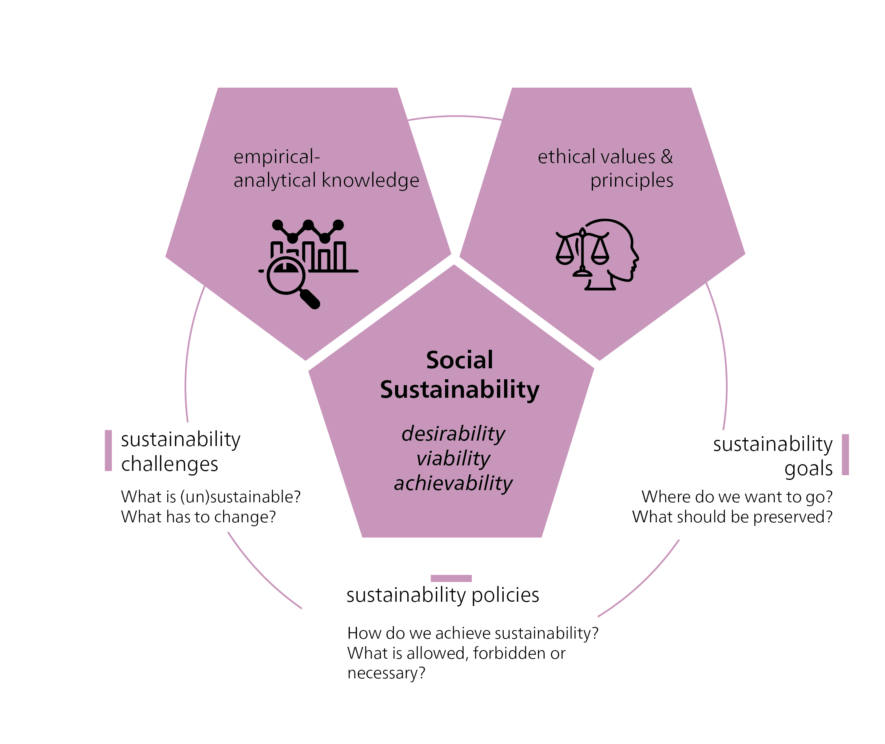
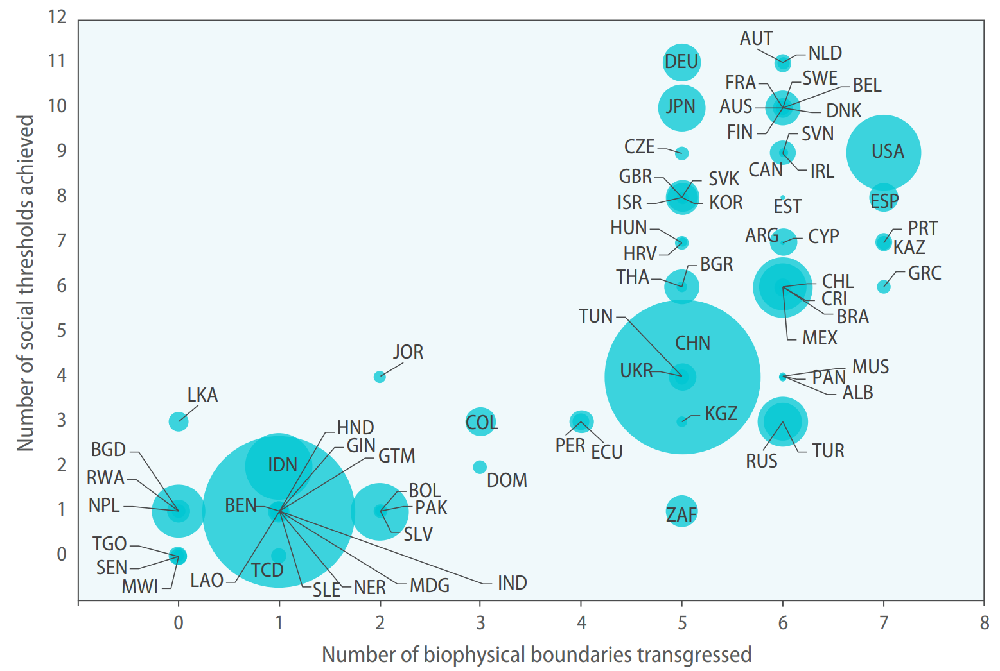
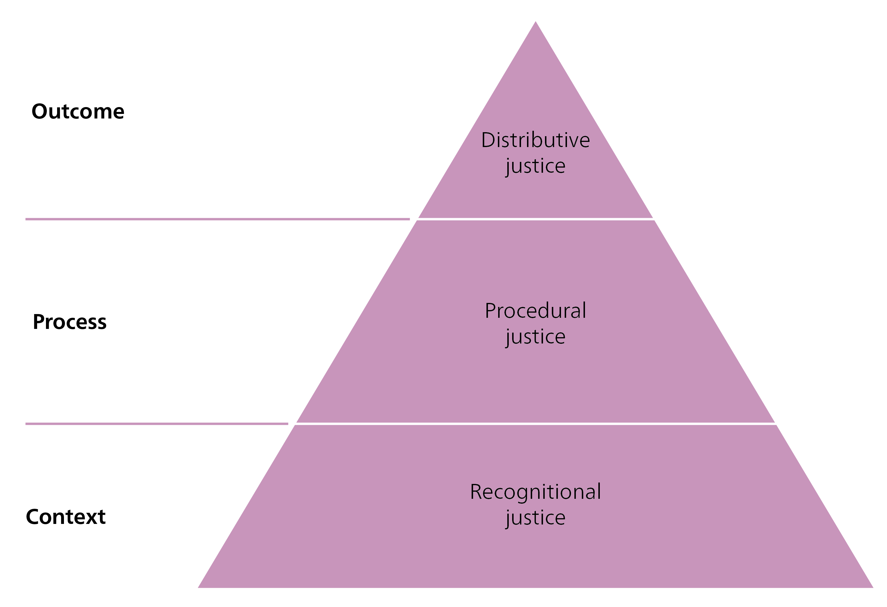

{kind=link}
{kind=link}
{kind=link}
| Category | What is being compared? | Focus | Typical example | Policy relevance |
|---|---|---|---|---|
| relative vs. absolute | Inequality measured in relation to differences vs. absolute differences | Categorization of inequality: Who has more/less? | The wealthy receive 40% of the income, while the poor receive 10% (relative) vs. the income gap required to meet basic needs (absolute) | Distributive justice vs. combating poverty |
| vertical vs. horizontal | Differences between income levels vs. differences between social groups | Categorization of inequality: How is inequality quantified and represented? | A CEO earns 100x more than a cleaner (vertical) vs. women earn less than men for the same work (horizontal) | Redistribution vs. anti-discrimination |
| individual vs. structural | Differences due to personal characteristics vs. differences due to social structures | Analysis dimension of inequality: What are the causes of inequality? | Individual: someone becomes successful through talent and effort vs. structural: someone is disadvantaged because of where they come from | Promotion of equal opportunities vs. reform of social structures |
4 Social Sustainability
Social sustainability is about a community’s well-being, encompassing elements like inclusion, equity, and social cohesion. It’s often argued that this dimension of sustainable development is harder to grasp than environmental or economic sustainability (Foladori 2005). That’s because social issues may not be as immediately visible as, say, rainforest destruction or hyperinflation. What does sustainability mean when communities are unequally affected by events such as flooding, or when Indigenous peoples are displaced by infrastructure projects? These impacts reveal deep-rooted inequalities that are largely based on societies’ social structures.
This is why the social dimension is so important. A society that is socially sustainable is better prepared to tackle challenges fairly and equitably (Ballet et al. 2020). Furthermore, having social acceptance is crucial for successfully implementing sustainability measures and initiatives (Assefa and Frostell 2007; Wüstenhagen et al. 2007).
In short, social sustainability addresses the following challenge: How can we create a resource-conserving society without increasing poverty and inequality? Achieving this requires balancing fundamental questions of distributive justice with the tension between human needs and wants.
This chapter begins by introducing social sustainability as a normative dimension of sustainable development. We define the concept by focusing on the following key elements: inclusion, social cohesion, resilience, and justice. Finally, we address the cultural aspect. While some scholars see culture as a component of social sustainability, others argue that it should be considered a fourth dimension in its own right – alongside the environmental, social, and economic dimensions (Sabatini 2019).
4.3 Inclusion
Inclusion addresses issues of social inequality. Social inclusion aims at enabling all people to participate in society – specifically, by reducing deep-rooted systemic disadvantages. Many individuals and groups face barriers that limit their socioeconomic participation. While such barriers may include poverty or having a low income, other forms of discrimination and exclusion may be based on gender, age, origin, occupation, ethnicity, religion, nationality, disability, sexual orientation, or gender identity. Such inequalities are reinforced by formal and informal norms, behaviour, laws, and institutions.
This raises normative questions: At what point is inequality considered problematic? And what level of inequality is socially unacceptable? Inclusion should not be understood as a form of charity, i.e. as something that is only “right” for ethical reasons. Reducing inequalities has considerable benefits for all of society. Greater inclusion and equal opportunities lead to better results in income, poverty reduction, and human capital (OECD 2015).
For example, a US study by Hsieh et al. (2013) found that a reduction in discrimination against female and Black workers accounted for 15 to 20% of economic growth per worker between 1960 and 2010. This growth was attributed to an increase in talented people gaining access to better opportunities. Other studies show that gender inequality can have a negative impact on economic growth (Fabrizio et al. 2018; Klasen and Lamanna 2009). There is also a link between inclusion and social stability: countries that actively promote the political participation and inclusion of disadvantaged groups tend to experience fewer social conflicts (United Nations and World Bank 2018).
In short, the costs of social inequality – such as fewer educational opportunities, lower lifetime incomes, or poorer health (Buehren et al. 2019; Wodon and de la Briere 2018) – are not only ethical issues. They also affect the overall economy, as they reduce potential, weaken productivity, and increase the risk of conflict. By contrast, more inclusive societies are more just, more stable, and more economically efficient.
4.3.1 (In)equality
As inequality is complex and diverse, there are different ways of analysing, measuring, and evaluating it. This involves asking questions about who is affected and where – and in what fields inequalities occur (see Figure 4.5) (Sen 1979).
Inequality can be approached from various perspectives. Below, we provide more detail on the aforementioned capability approach.
Approaching inequality: Guided by Sen’s question “Equality of what?” – the capability approach
The capability approach provides a normative framework for assessing inequality and human well-being that goes beyond conventional distribution principles. Traditional approaches to distributive justice often aim either at ensuring equal distribution based on performance or at guaranteeing a minimum level of resources for all. However, achieving complete equality between individuals – i.e. equality of outcome – is nearly impossible, as many influencing factors are distributed randomly or unfairly. It is therefore considered fairer to focus on equality of opportunity. This principle aims to ensure that every person has the chance to lead a meaningful and dignified life with access to at least a minimum level of prosperity. This minimum level should suffice to cover basic needs and guarantee equal civil rights, ensuring that everyone has what they need to meet their needs and participate equally in society.
Developed in the 1980s by the Indian economist, philosopher, and Nobel Prize winner Amartya Sen and later expanded by the philosopher Martha Nussbaum, the capability approach serves as an alternative to traditional welfare economics, which measures prosperity primarily through economic indicators (Roder 2020). The capability approach shifts attention away from formal entitlements or economic aggregates toward people’s real freedoms to live the life they value. It emphasizes that genuine development depends not only on the existence of opportunities and resources but also on whether individuals can actually make use of them in practice. This, in turn, is shaped by personal factors such as health or disability as well as by social, political, and environmental conditions. For instance, for people with disabilities, well-being requires more than the formal recognition of rights; it depends on an inclusive society that removes barriers, combats discrimination, ensures access to education, and enables participation in political and social decision-making.
The capability approach defines well-being in terms of capabilities and functionings. Capabilities are real opportunities for action – i.e. what people could do or be if they were free to choose. For example, being well-nourished, getting married, being educated, or travelling without restrictions. Functionings are the capabilities that are actually converted. Whether people can convert available resources such as income, education, or public services into functionings depends on conversion factors. These include personal characteristics, social structures, and environmental conditions. They ultimately determine whether capabilities and functionings can actually be used.
The capability approach, therefore, shifts the focus from equality to equity. While equality aims to ensure that everyone receives the same resources (i.e. input), equity focuses on the result: what does a person need, in order to achieve a comparable level of well-being (i.e. output)? (see Figure 4.6).
Approaching inequality: Where and of whom?
Building on the capability approach, which emphasizes people’s real opportunities to lead the lives they value, it is crucial to recognize that inequality can manifest in different ways and be assessed across various dimensions. Inequality can be analysed in different spaces, for example by distinguishing between absolute and relative inequality (Niño-Zarazúa et al. 2017) or between vertical and horizontal inequality (Stewart 2005).
Absolute inequality describes a situation in which people are unable to meet their most basic survival needs. This is the case, for example, when a person does not have access to clean drinking water, enough food, or safe housing, and lives below the poverty line. This form of inequality is often defined by fixed income thresholds, such as the World Bank’s international poverty line.
Relative inequality measures a person’s disadvantage in relation to the average standard of living within a particular society or community. For example, while a family in a rich country may have enough income to cover food and housing, they may lack the resources to participate fully in society – if, say, they can’t afford internet access or their children’s school trips. Relative inequality becomes evident when living conditions fall significantly below the social average. It often leads to social exclusion and limits access to resources and the opportunities necessary to lead a dignified and self-determined life in a particular social context. The key difference between the two concepts is that absolute poverty refers to an objective lack of essential goods, while relative poverty describes a person’s social and economic status in relation to others in a society (Niño-Zarazúa et al. 2017).
Another concept distinguishes between vertical and horizontal inequality. Vertical inequality focuses on socioeconomic differences between individuals – such as in income, occupational status, or education. By contrast, horizontal inequality refers to differences between culturally defined groups, based for example on gender, age, marital status, nationality, region, or place of residence (Stewart 2005).
How can we analyse inequality? Individual vs. structural approaches
Analyses of inequality often distinguish between individual inequality and structural inequality. An analysis of individual inequality draws on the principles of welfare economics and the concept of absolute inequality. It focuses on socioeconomic characteristics such as differences in income, educational level, and occupational status. This approach assumes that economic inequalities are primarily the result of personal attributes and individual effort.
By contrast, analyses of structural inequality are more closely aligned with the concepts of equity, the capability approach, and relative inequality. Structural inequality is considered not as a product of an individual’s characteristics, but as a result of the social framework – such as a person’s position within the mode of production or the social hierarchy; their access to wages, profits, or a pension; or their nationality, all of which are key factors of global inequality (see Milanovic 2019).
This chapter has introduced various perspectives on inequality, including the widely used capability approach, which offers an overarching and normative perspective. The other perspectives may sound similar, but in fact differ in their focus (see Table 4.2).
{kind=link}
4.5 Resilience
Resilience is the ability of individuals, households, communities, or entire societies to prepare for, cope with, and recover from shocks (Folke 2016). Shocks can occur at an individual (e.g. job loss, illness) or societal level (e.g. natural disasters, conflicts, food shortages). They can occur suddenly (e.g. natural disasters), intensify gradually (e.g. soil degradation), or be a constant presence (e.g. poverty, child labour, gender-based violence).
Societies with a high level of resilience can regain their quality of life and economic stability more quickly after a shock. Resilience is especially important for poor and marginalized groups, as they face more shocks, suffer greater relative losses, and receive less support (Bangalore et al. 2017). Inequalities also mean that different groups are unevenly or disproportionately affected by shocks (Hallegatte et al. 2020). Depending on social norms, groups such as women, young people, or the elderly are often more vulnerable or less adaptable (Ajibade et al. 2013; Barrett et al. 2021).
We can identify three distinct strategies for addressing risk and building resilience:
Risk reduction and mitigation: Measures that reduce the likelihood of shocks or their negative consequences (Obrist et al. 2010). Examples include immunization, income diversification, local protection infrastructure, or state social systems.
Coping strategies: Responses to shock (Imperiale and Vanclay 2021; Severi et al. 2012). Coping strategies include insurance models, recourse to savings or loans, and support from social networks. Governments can also help, for example through cash transfers or social programmes. However, without sufficient resources, people affected by shocks may resort to harmful, short-term measures, such as restricting essential consumption, overexploiting resources, or using child labour.
Transformative strategies: Far-reaching reforms or new institutions that increase the long-term resilience of societies (Mozumder et al. 2018; Pfefferbaum et al. 2017), typically combining risk reduction and coping strategies. For example, establishing a government agency for flood preparedness that improves early warning systems, fosters risk reduction research, and develops flood response plans. Or introducing measures to reduce the risk of gender-based violence by investing in legal, institutional, and awareness-raising programmes that change incentives and social norms regarding violence.
4.5.1 Basic needs as a prerequisite for resilience
In the aforementioned doughnut economics framework, resilience is only possible if all people can meet their basic needs. Meeting these social foundations ensures that individuals and societies are better able to cope with shocks. However, in countries of the Global South, these basic needs are often unmet. Conversely, while wealthier countries are able to meet these needs, they usually exceed planetary boundaries in doing so. See Figure 4.8 comparing Switzerland and Laos.
{kind=link}
{kind=link}
These minimum social standards – the “social floor” – include access to food, health, education, income, and work. They also include peace, justice, political participation, social and gender equality, housing, social networks, energy, and water. In this textbook, we use the example of food to show how access to one of these standards affects resilience. Difficulties with a single standard rarely occur in isolation and often affect other areas as well. Ensuring these social foundations is therefore crucial to sustainable development.
Global food security
Food security means having enough food and reliable access to it, especially staple foods. A household is considered food secure when its members are not at risk of hunger or malnutrition. Malnutrition has severe health impacts, such as emaciation and stunted growth. It also increases healthcare costs, reduces productivity, and inhibits economic growth, thereby reinforcing a cycle of poverty and disease.
Food security is closely linked to a food system’s resilience – its ability to tolerate and adapt to change. Our global food system is particularly vulnerable due to its complexity and the many interdependencies among its elements. It is exposed to both external threats – such as the consequences of climate change – and internal risks, such as policy failures, unsustainable consumption patterns, or market failures.
Figure 4.9 shows that almost 2.4 billion people worldwide were affected by food insecurity in 2022. Just under half of these (1.1 billion) lived in Asia, 37 per cent (868 million) in Africa, 10.5 per cent (248 million) in Latin America and the Caribbean, and around 4 per cent (90 million) in North America and Europe. The figure also shows the proportions of severe and moderate food insecurity: severe food insecurity means that people have difficulty meeting their short-term basic food needs. Moderate food insecurity, on the other hand, refers to an inadequate supply of essential nutrients, which can result in health problems.
{kind=link}
This demonstrates the need for fair and resilient food systems. As Figure 4.9 shows, a food system encompasses all activities, actors, and infrastructures involved in the production, processing, transport, distribution, trade, consumption, and disposal of food. Food systems are deeply embedded in society and the environment. Changes within these systems therefore affect numerous areas: the environment (water, air, soil, biodiversity), social and cultural aspects (e.g. impact on local communities), the economy (value chains, trade, financing), and health (Tribaldos and Kortetmäki 2022).
Discussions on combating food insecurity often focus on increasing yields and reducing food waste, but these approaches are not proving to be the most effective. Current food production and consumption habits increasingly rely on highly processed meat and dairy products, as well as intensive production methods. Global consumption leads to outsourced environmental impacts like soil degradation, biodiversity loss, water overuse, and the disappearance of local plant varieties – impacts that primarily affect the producers, not the consumers.
Focusing solely on increasing production also overlooks the fact that the world already produces enough food. What’s needed instead is a far-reaching transformation in how these resources are used and distributed. For example, Shepon et al. (2018) found that plant-based substitutes that are nutritionally comparable (e.g. in terms of protein content) are significantly more efficient than animal products: On one hectare of arable land, up to 20 times more food can be produced than with beef and twice as much as with eggs, which represent the most and least resource-intensive animal foods, respectively.
However, the current food system feeds large quantities of edible crops to farm animals. According to Berners-Lee et al. (2018), around 41% of human-edible crops (measured by kilocalories per person per day) are fed to farm animals. This process is highly inefficient: the animals only return around 12% of that energy in the form of meat, fish, and dairy products. In other words, a significant proportion of potential food for human consumption is lost in the process (see Figure 4.10).

4.6 Justice
4.6.1 Procedural Justice
Inclusion, social cohesion, and resilience are considered the three key dimensions of social sustainability. However, whether these factors actually enable social sustainability depends on a fourth element: procedural justice. Procedural justice is decisive in determining whether, and to what extent, social change succeeds across the three dimensions.
Procedural justice focuses on the process. It describes how policies are developed, programmes designed, and measures implemented. A high degree of procedural justice is achieved when decision-making processes are perceived as fair, trustworthy, and aligned with social norms (Hinsch 2016; Wijsman and Berbés-Blázquez 2022), even when addressing conflicts and tensions. This is not an either/or situation, but rather a continuum: processes can be perceived as more legitimate or less legitimate, and different groups often perceive this differently.
Ensuring legitimacy requires the public perception that decisions are made by trustworthy and recognized actors who act in accordance with shared values and agreed rules. Legitimacy is further strengthened through transparency, participation, and tangible benefits for those affected. This is particularly relevant when decisions entail costs or burdens for certain groups, such as land redistribution, carbon taxes, or changes in working conditions. How procedural justice is achieved largely depends on the respective societal context, culture, and structures. In general, however, we can identify five key drivers:
Ensuring credibility of decision-makers: Legitimacy increases when authority stems from recognized sources such as elections, expertise, or institutional confirmation.
Adhering to agreed rules: Processes are considered legitimate if they are based on accepted standards, procedures, or traditions.
Conforming with societal values: The process takes into account moral, religious, or philosophical beliefs.
Demonstrating perceived benefits: Legitimacy increases when the affected parties believe they will benefit from the decisions.
Promoting participation and transparency: Open dialogue and co-creation foster acceptance, especially in the event of conflicts.
These drivers often interact and reinforce each other, with the relative importance of each driver depending on the social context. As shown in Figure 4.4, procedural justice encompasses both the design and the implementation of policies, programmes, and initiatives. These processes take place within a policy arena, the term used to describe all constellations in which policies and programmes are formulated and implemented, such as parliaments, ministries, companies, associations, or local initiatives. However, the policy arena is becoming increasingly fragmented and polarized, amid challenges like social media and disinformation. This weakens the credibility of information and hinders the ability to build broad consensus and legitimacy in decision-making processes.
In Switzerland, this is exemplified by political representation, which fails to adequately reflect the composition of the population: An analysis of the 2023 elections shows that women hold only 37.8% of seats in the National Council. Non-binary people are not yet included in statistics on political representation. In addition, the Swiss parliament is considered a “club of the highly educated”, as the proportion of councillors with a university degree is twice as high as in the general population. Only around one in six (or 16%) of the candidates had a “migration background” – compared to around 40% of the population. A quarter of the adults living in Switzerland do not have the right to vote.
Political scientist Joachim Blatter describes this exclusion from political participation as a “democratic deficit”, noting that Switzerland excludes more people from the political system than most other European countries (Blatter et al. 2017). In some municipalities, where only a fraction of the population is entitled to vote, this can mean that ultimately that only 10–20% of residents have a say in political decisions (Debelle 2020).
4.6.2 Distributive justice
As described in Section 4.1.1, the various dimensions of justice influence one another. While procedural justice focuses on the process, distributive justice concentrates on the outcome of the process. Distributive justice could involve ensuring the fair distribution of environmental resources and environmental impacts. Measures that aim at distributive justice include progressive taxation, social safety nets (e.g. old-age and unemployment insurance), and enforcement of equal pay regardless of gender, ethnicity, or other discriminatory factors.
Historically, discussions about distributive justice were primarily limited to political communities, such as national governments, and focused solely on the current generation. However, sustainability issues require a broader perspective. Distributive justice must be considered globally and intergenerationally, as well as in relation to our responsibility towards the environment and other affected species. Climate targets are a case in point: how should emissions reduction targets be distributed between countries, between generations, or between different social groups? Who should bear the costs of adapting to climate change?
Thus, distributive justice encompasses a wide range of topics. Take the issue of income, for example. In Switzerland, women earn on average CHF 1,364 less per month than men, despite the principle of “equal pay for work of equal value” being enshrined in the Federal Constitution since 1981. Around half of this difference can be explained by objective factors such as education or sector, but the other half – which is as of yet unexplained – could indicate wage discrimination (EBG 2023). The principle is widely accepted and rarely disputed. Consequently, opponents of measures to implement equal pay tend not to take issue with the principle itself, attempting instead to justify the gap by citing allegedly objective factors.
However, social consensus is far harder to achieve in other questions of distributive justice. Various theories (see Box 4.1) and concepts (see Box 4.2) seek to answer the question of “What is fair?”. They offer different perspectives on what individuals or groups perceive as fair, and provide guidance on how social advantages and disadvantages should be distributed. A controversial example is that of unconditional basic income. From a distributive justice perspective, this concept could be considered fair, as it distributes resources equally and equalizes social opportunities. However, some argue that such a model could weaken incentives to work and thus impair productivity and innovation. Depending on the theory applied (see Box 4.1), very different conclusions can be drawn on such topics – as shown in the reflections after Box 4.2.
When reflecting on the introduction of an unconditional basic income, proponents of the various theories would arrive at very different conclusions – as shown in Table 4.4.
| Theories of justice | Is the idea of a basic income a good idea | Reasoning |
|---|---|---|
| Libertarian theories (Nozick, Hayek) | No | Social justice cannot be controlled centrally. The state should only assume minimal protective functions, and resources should be allocated via the market. Redistribution through taxes to finance a basic income is an encroachment on individual freedom and property rights. |
| Liberal theories (Utilitarianism, Contractarianism, Egalitarianism) | Yes/Maybe | From a utilitarian perspective, a basic income could increase overall utility (or benefit). Contractarianism (Rawls) also supports it, arguing that it strengthens equal basic freedoms. From an egalitarian perspective, a basic income can promote opportunities, but it is viewed critically because it emphasizes equality (i.e. that everyone receives the same) rather than justice in the sense of equity (i.e. that each person receives what they need). Additional measures would be necessary to ensure equity. |
| Collective theories of justice (Walzer, Sandel) | Depends on context | How this question is assessed depends on specific historical, cultural, and social conditions. A basic income could be considered socially just if it strengthens social cohesion and the common good. |
While theories of justice are general frameworks or models that define what justice is and how it can be achieved in a society, concepts of justice focus more on specific aspects. As the overview in Box 4.2 shows, distributive justice issues can be viewed from a variety of perspectives.
4.7 Cultural sustainability
Sustainability models typically describe three dimensions of sustainable development: the environmental, the economic, and the social. Social sustainability – which was the focus of this chapter – often includes cultural aspects. However, there is growing debate as to whether culture should be understood as a fourth dimension of sustainability (Sabatini 2019).
Although the term has not yet become firmly established in the political discourse or yet been clearly defined, it is gaining traction in academic debates and in policy programmes (Zheng et al. 2021). Cultural sustainability refers to both tangible and intangible cultural assets. However, it remains a challenge to implement. At a global level, UNESCO plays a key role in the protection of cultural heritage, working to preserve cultural diversity through various conventions and programmes. Today, there are numerous UNESCO World Heritage Sites that preserve culturally significant places. UNESCO also protects intangible cultural assets, for example through programmes to preserve endangered languages or traditional practices.
The cultural dimension of sustainability emphasizes the role of values, traditions, beliefs, and cultural practices in shaping sustainable development. Culture influences how societies respond to environmental, economic, and social challenges – and it provides the framework within which sustainable solutions can be understood, accepted, and implemented. Sustainable development must therefore consider not just technological and economic factors, but also the cultural context in which measures are implemented. Proponents of an independent view of cultural sustainability argue that culture is more than just a part of the social sphere: it shapes how people interpret the world, form identities, and understand their relationship to society and nature. Culture shapes values, traditions, language, and knowledge systems that extend beyond social structures. In addition, the preservation of cultural diversity is viewed as a goal in its own right, because culture significantly influences all other dimensions of sustainability.
4.7.1 Links to the other three dimensions of sustainability:
Culture and social sustainability: Culture is a key means of shaping values, behaviours, and social assumptions. It influences the openness, inclusivity, and cohesion of societies, as well as respect for human rights, health, and quality of life. Culture provides orientation and conveys shared values such as trust, solidarity, the rule of law, and democracy – and thus creates the basis for individual and social development.
Culture and economic sustainability: Culture and the economy are closely connected. As UNESCO emphasizes, cultural heritage, creative industries, sustainable cultural tourism, and cultural infrastructure not only contribute to economic development and poverty reduction – they also create social and identity-forming values, especially in countries with a rich cultural heritage and great cultural diversity.
Culture and environmental sustainability: Cultural factors shape lifestyles, consumption patterns, and our relationship with the environment. Local and indigenous knowledge systems and traditional environmental practices offer valuable approaches to dealing with environmental challenges. They help to prevent biodiversity loss, reduce land degradation, and mitigate climate change.
4.8 Conclusion
{kind=link}
As Figure 4.11 shows, three seemingly contradictory statements can be true at the same time: In many respects, the world is awful. Nonetheless, it’s become much better. And finally – it can be much better still. This perspective also provides a good basis for understanding social sustainability strategies.
“The world is awful”: Social ills persist.
Millions of people around the world are affected by poverty, hunger, discrimination, and a lack of participation. Inequalities between and within societies jeopardize cohesion, resilience, and justice. Strategies for social sustainability must clearly identify and address these problems.“The world is much better”: Progress has been made.
Historical comparisons show that key social indicators have improved: lower infant mortality, higher literacy, growing social rights. These developments are proof that political action, social movements, and institutional reforms are working. Strategies for social sustainability can build on these successes.“The world can be much better”: The potential is huge.
Inclusion, social cohesion, resilience, and procedural justice are the key levers for overcoming existing grievances. Strategies range from combating discrimination, expanding social security systems, and implementing participatory governance – to promoting education, health, and cultural diversity.
This perspective shows that social sustainability strategies must clearly identify grievances, build on progress made, and create new opportunities for greater justice.
It’s true that the challenges are immense. But we are not doomed. The progress we’ve already made demonstrates that change is possible. The key now is to act rapidly and on a large scale. As Hannah Ritchie (2024) notes, we often waste energy on internal conflicts among sustainability proponents, thereby benefiting opponents of the cause. We need systemic change and a meliorist ethic – a belief that the world can be improved step by step through conscious action. Instead of getting bogged down in internal disagreements, we need joint effort in the same direction – even if our paths and priorities vary.
In the end, however, it’s important to remember that strategies for social sustainability always require discussion. Who defines the boundaries of needs and desires, whose future vision of sustainable development should be pursued, what sustainability paths are favoured, and who is making these decisions? Also – who benefits from the chosen course, who bears the costs, and what distribution patterns result from this? The difference between needs and desires in particular shows how complex such discussions are: Needs are finite, universal, and indispensable for human well-being, like housing or food. Wants, on the other hand, are potentially infinite, subjective, and dispensable, like the choice of a particular brand of shoe. As Swiss politician Jaqueline Badran said in an interview: “You can’t not have a place to live. It’s different from trainers, where you can say: Adidas is too expensive for me, so I’ll buy another brand. You can’t do that with housing.” (Albrecht 2023). This example demonstrates that the debate about social sustainability is not just about abstract principles; it’s about the concrete, existential questions of life.
Such questions cannot be answered technocratically. Instead, they require open, fair, and inclusive negotiation processes. Strategies for social sustainability must therefore not only develop concrete solutions to injustices – they must also create spaces in which these discussions can be held.
4.9 Sustainability Basics: The Quiz – Chapter 4
Which of the following statements correctly describe the three dimensions of justice commonly discussed in social sustainability? (More than one statement may be correct.)
In social sustainability debates, distributive justice addresses the fair allocation of benefits and burdens. Procedural justice focuses on who is included in decision-making processes and how decisions are made. Recognition justice highlights the importance of respecting diverse identities, cultural contexts, and historical experiences, and of addressing structural injustices. The remaining statements incorrectly attribute the focus of one justice dimension to another.
- False
- False
- True
- True
- True
Which of the following statements correctly describe key dimensions of social sustainability? (More than one statement may be correct.)
Inclusion concerns equal access and participation across economic, political, social, and cultural domains. Social cohesion emphasizes trust, belonging, and the ability of groups to work together constructively. Resilience describes the capacity of societies or communities to withstand or adapt to shocks such as environmental changes or political crises. The remaining statements misrepresent these concepts by narrowing their scope or attributing incorrect characteristics.
- True
- True
- True
- False
- False
According to the capabilities approach, which of the following statements is correct?
The capabilities approach focuses on what people are actually able to be and to do. It therefore emphasizes that resources should be distributed in ways that enable all individuals to achieve essential functionings and states of being necessary for a good life, rather than focusing solely on formal rights, equal resource distribution, or GDP growth.
- True
- False
- False
- False
Which of the following statements correctly distinguish between individual and structural approaches to analysing inequality? (More than one statement may be correct.)
Individual approaches to inequality emphasize differences between individuals and typically draw on welfare economics and absolute inequality, attributing inequalities largely to personal characteristics and effort. Structural approaches, in contrast, focus on the social, economic, and political frameworks that shape unequal outcomes, and are closely connected to concepts such as equity, the capability approach, and relative inequality.
- True
- True
- True
- True
- False
Which of the following best describes resilience in a social sustainability context?
Resilience refers to the ability of individuals, households, communities, or entire societies to prepare for, cope with, and recover from shocks such as economic crises, natural disasters, or social conflicts. It does not imply the complete avoidance of shocks, but rather the capacity to deal with them and regain quality of life and stability.
- False
- False
- False
- True
Which strategy for building resilience focuses on long-term systemic change rather than immediate responses to shocks?
Transformative strategies aim at long-term increases in resilience by introducing far-reaching reforms or new institutions. They typically combine elements of risk reduction and coping, but go beyond short-term responses by addressing underlying vulnerabilities and changing social, institutional, or structural conditions.
- False
- True
- False
- False
Which of the following statements correctly reflect how different theories of justice assess the idea of an unconditional basic income? (More than one statement may be correct.)
Different theories of justice arrive at different conclusions regarding an unconditional basic income. Libertarian theories typically reject it due to concerns about state intervention and property rights. Liberal theories, such as utilitarianism or Rawlsian contractarianism, may support it under certain conditions, while egalitarian approaches emphasize the need to distinguish equality from equity. Collective theories stress that judgments depend on social and cultural context. There is no universal agreement across all theories.
- True
- False
- True
- False
- True
4.1 Social sustainability, a normative concept
Interpretations of social sustainability are based, on the one hand, on empirical knowledge about how societies function and, on the other, on ethical judgements about what is valuable and should be pursued. In order to define appropriate sustainability goals, we need to know what ethical principles and values a particular social system is based on. In other words, what does a society or community perceive as “good”, desirable, and just?
As a normative concept, social sustainability aims for a fair distribution of benefits and costs within society. It encompasses various dimensions of equality (see Section 4.1.1, Dimensions of justice) and justice (see Section 4.6, Justice), and it examines how the decisions made within a particular society influence the distribution of resources.

These are aspects exemplified by Kate Raworth’s doughnut economics (2017), a framework which views the SDGs and human rights as the basis for socially sustainable and equitable human activities. In doughnut economics, meeting the basic needs of all people is key. These basic needs, which form the framework’s social foundation, include access to clean water, sanitation, healthcare, education, food, clean cooking facilities, electricity, housing, and information and support networks, as well as the opportunity to work and earn an income. Additional factors which form the social foundation are gender equality, social equality, peace, and justice, as well as political participation – i.e. the ability to exert social influence.
In doughnut economics, economic policies could contribute to achieving social justice by distributing benefits and costs without exceeding planetary boundaries. And therein lies the challenge: Countries that perform well in terms of social sustainability indicators – e.g. access to food, education, or housing – often exceed ecological boundaries. Conversely, countries that stay within these ecological limits often score poorly in social areas (see Figure 4.2) (O’Neill et al. 2018). Striking a balance between social and environmental requirements is therefore key.

To achieve a sustainable future, Raworth (2017) argues that we must distribute the Earth’s resources more fairly. This would allow everyone to meet their basic needs while respecting the planet’s limits. It would require changes in lifestyle – especially by the wealthy, who are responsible for the majority of emissions. At present, those who generate more emissions tend to have better access to essential goods such as food, water, energy, and education – the very things that people in lower-income countries often lack. In wealthier countries, people’s basic needs are generally met more comprehensively, leading to more prosperity, equality, and justice. At the same time, higher living standards are often linked to increased greenhouse gas emissions and consumption – as seen in Western industrialized countries (e.g. the US, Europe) and China.
Another approach to social sustainability is found in the United Nations Human Development Reports, which use a model of human development rooted in the capability approach (see Section 4.3.1, (In)equality). The capability approach asks what a person needs to lead a good and fulfilling life. Because different people need different resources to achieve this, giving everyone the same thing does not foster true equality. Instead, we should provide each person with what they need to live a life they can value. This model of human development promotes respect for human dignity as an inalienable right and advocates providing realistic opportunities for everyone to flourish.
4.1.1 Dimensions of justice
Doughnut economics and the capability approach are two examples of pithy and influential normative frameworks. In this chapter, we cover a range of concepts and approaches that – through their social dimensions – inherently involve normative and ethical considerations.
The many theories and concepts of social sustainability are also linked to different ideas of justice. Some of these are described in more detail in Section 4.6 (Justice). Three frequently mentioned dimensions are: distributive justice, procedural justice, and recognition justice (de Bruin et al. 2024; Tribaldos and Kortetmäki 2022; Wijsman and Berbés-Blázquez 2022).

Distributive justice is a results-oriented concept that aims at a fair distribution of goods and burdens, regardless of social differences. This principle applies to issues such as access to clean water, the unequal burden of environmental pollution, or equal pay.
Procedural justice focuses on the inclusivity of decision-making processes. It calls for underrepresented groups to be fairly represented in institutions so that their perspectives can be heard and incorporated into decision-making processes.
Recognition justice emphasizes the importance of the context, and of respect for social and cultural differences. It involves recognizing structural injustices, respecting the dignities and values of different people and social groups, and understanding that diverse needs and preferences are rooted in different historical experiences, identities, and cultural backgrounds.
Table 4.1 shows how these three dimensions influence each other (Wijsman and Berbés-Blázquez 2022). A more detailed discussion of distributive and procedural justice follows in Section 4.6, as these are the dimensions that most affect social sustainability debates.